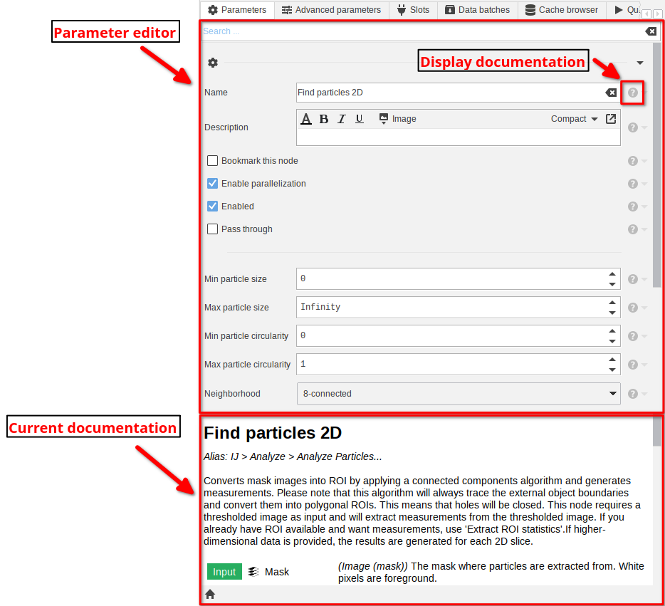
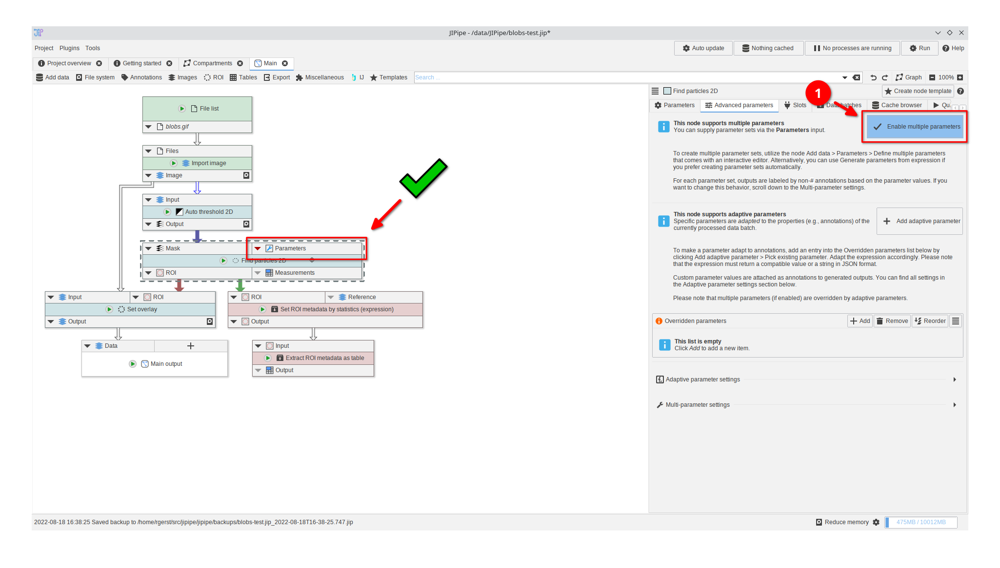
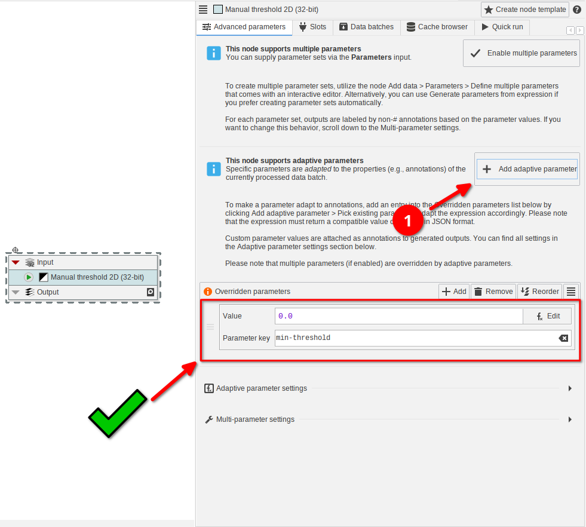

Parameters
Table Of Contents
Many important settings of a node are located within its parameter panel (accessible by selecting the node and going to the Parameters tab).
The editor contains the list of all parameters, and a section containing the current documentation that by default shows general information about the node.
If you want to know more details about a specific parameter, click the help button next to the item, which will change the documentation to one specific to the parameter.
On this page you will also find brief descriptions about additional features of the parameter system.

Testing multiple parameters
Many nodes support a feature that allows to run a workload on multiple parameter sets. For example, you can apply different auto thresholding methods on the same node. To enable support for multiple parameters, switch to the Advanced parameters tab. Then enable the Enable multiple parameters button.
This will add a Parameters slot to the node that consumes data that represents the parameter sets.
If the advanced parameters tab or the button are not present, then the feature is not supported.

Creating parameter sets
There are two options to create parameter sets:
- use the interactive designer provided by the Define multiple parameters node
- generate parameter sets via an expression (Generate parameters from expression)
Independent of the choice, add the node into the pipeline and connect it to the Parameters slot.

Interactive parameter designer
Opening the parameter editor
Select the node and click the "Edit parameters" button.Adding the parameter
Parameter sets are represented as table where the column indicates the parameter and each row represents one parameter set. To create this table, start by importing a parameter from an existing node via the Import from node button and selecting one or multiple parameters (blue wrenches) from the available ones.Adding parameter sets
To add the first parameter set, click the Add button. After selecting the table cell in the editor, you can edit its value in the right-hand panel. If you want more parameter sets, continue to add rows.Generate via expressions
An alternative mode to the interactive parameter set generator is the node Generate parameters from expression that generates parameter sets via an expression. Please note that this mode is more advanced and requires you to know about the exact properties of the parameter.
Identifying the parameter properties
Select the node that should be run with multiple parameter sets and click the help icon next to the parameter. Copy/write down the unique identifier and remember which type the parameter has.Setting up the columns
As with the interactive designer, the expression-based Generate parameters from expression node is representing parameter sets as columns. Each column is generated independently by an expression that returns one or multiple values. Insert the unique identifier into the Key setting and select the correct parameter type.Setting up the expression
Finally, write an expression that returns the value or an array of values. For simple types (numbers, booleans, strings, ...), you can return the values directly. For example,MAKE_SEQUENCE can be utilized to generate numeric sequences.
You can also write the list directly via the ARRAY function, e.g., ARRAY("a", "b", "c").For more complex types, you should return the JSON representations of the parameter values and enable the Values are JSON setting.
Adaptive parameters
Many nodes support parameters that can be adapted to the current annotation set. This, for example, allows to apply a thresholding based on an annotation value. Switch to the Advanced parameters tab to add adaptive parameters.
Here you can either manually add items into the Overridden parameters list or click the Add adaptive parameter button to setup the appropriate unique parameter key and default value for a parameter.
